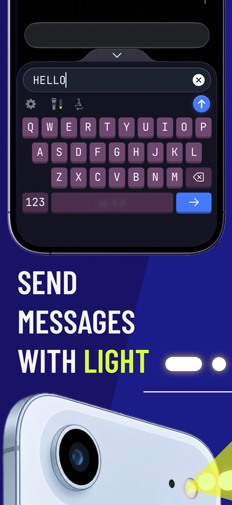
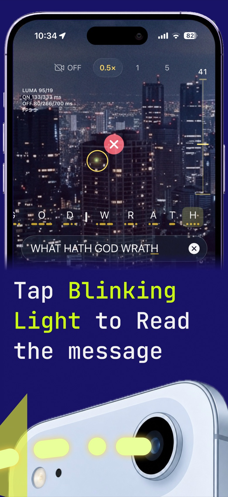
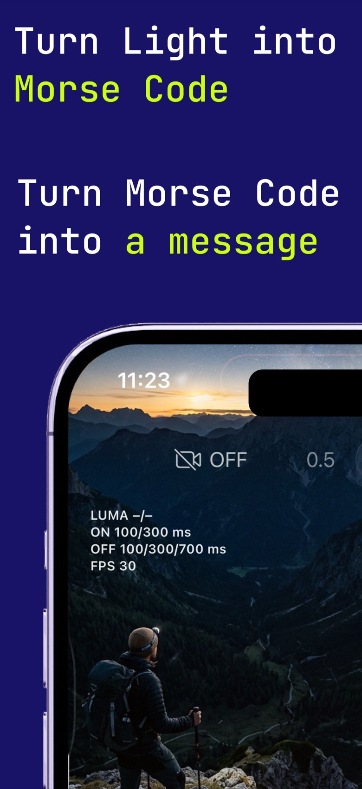
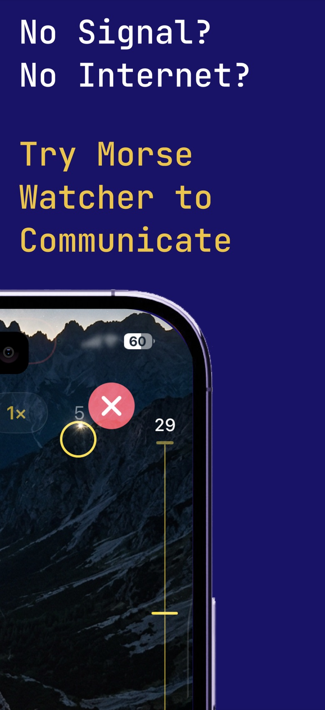

برنامه کد مورس برای آیفون و اندروید
کد مورس را از هر نور چشمکزن بخوانید.
- دوربین را به سمت نور بگیرید.
- روی نور ضربه بزنید تا هدفگیری شود. پیام به صورت متن ظاهر میشود.
- با چراغقوه گوشی پاسخ دهید.





چه کاری انجام میدهد
رمزگشایی
مورس را از چراغقوهها، لامپها و گوشیهای دیگر میخواند و سرعت فرستنده را خودش یاد میگیرد.
ارسال
هر پیامی را که تایپ کنید با چراغقوه گوشی چشمک میزند.
SOS رایگان
دور از دسترس و بدون آنتن؟ SOS، علامت بینالمللی درخواست کمک، را برای کسانی که نور شما را میبینند چشمک بزنید.
هشدار رایگان
نور چشمکزن هشدار میتواند به اعلام حضور شما به رانندگان در جادههای تاریک کمک کند.
کاربردها
وقتی گوشیتان آنتن ندارد
پیش از آنکه به آن نیاز پیدا کنید دانلودش کنید. بدون اینترنت نمیتوانید به App Store دسترسی داشته باشید.
نه آنتن، نه وایفای، نه اینترنت. چراغقوه و دوربین شما هنوز کار میکنند و Morse Watcher آنها را به راهی برای فرستادن پیام تبدیل میکند: یک گوشی چشمک میزند و گوشی دیگر آن را به صورت متن میخواند. این کار وقتی جواب میدهد که هر دو گوشی برنامه را داشته باشند و نور یکدیگر را ببینند و وقتی بیرون تاریک است، بهتر کار میکند.
شرایط اضطراری SOS
دور از دسترس و بدون آنتن؟ SOS، علامت بینالمللی درخواست کمک، را برای کسانی که نور شما را میبینند چشمک بزنید.
کوهنوردی و کمپینگ
پیامهای کوتاه بین چادرها یا در فضای باز بفرستید، وقتی نور یکدیگر را میبینید.
طوفان و قطعی برق
وقتی دکلهای مخابراتی از کار افتادهاند، از آن سوی خیابان یا از پشتبام به همسایهها علامت بدهید.
پیادهروی شبانه هشدار
نور چشمکزن رایگان هشدار میتواند به اعلام حضور شما به رانندگان در جادههای تاریک کمک کند.
قطعی اینترنت
وقتی شبکهها قطع هستند، پیامهای کوتاه را با نور و در محدوده دید بفرستید.
یادگیری مورس
ارسال و خواندن را تمرین کنید و خودتان را با رمزگشایی زنده بسنجید.
پیشاهنگی و بازیها
نور چشمکزن را در اردو، اتاق فرار یا بازیهای شبانه رمزگشایی کنید.